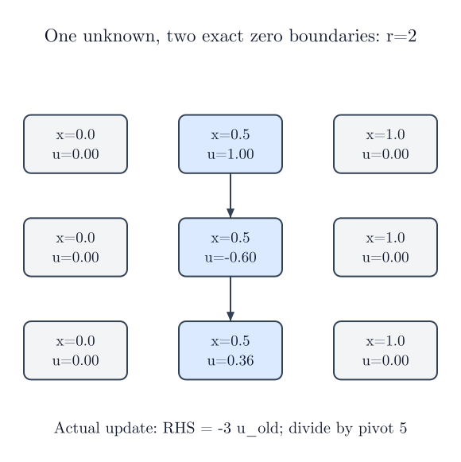
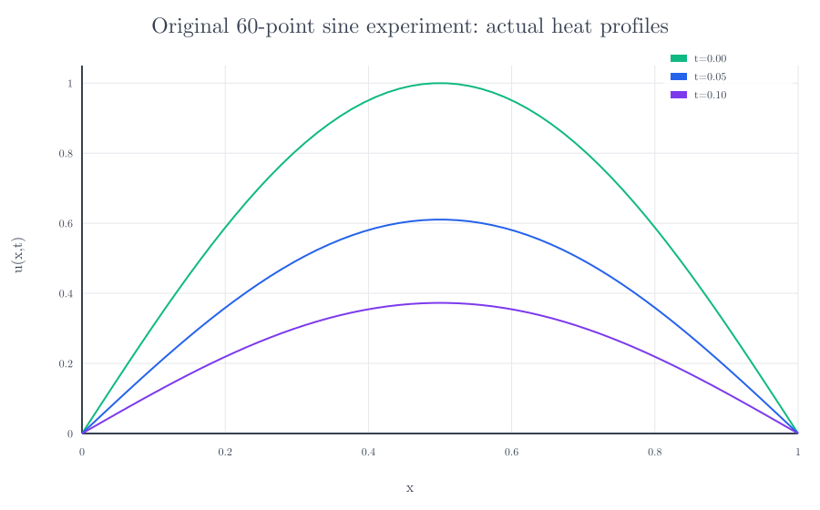
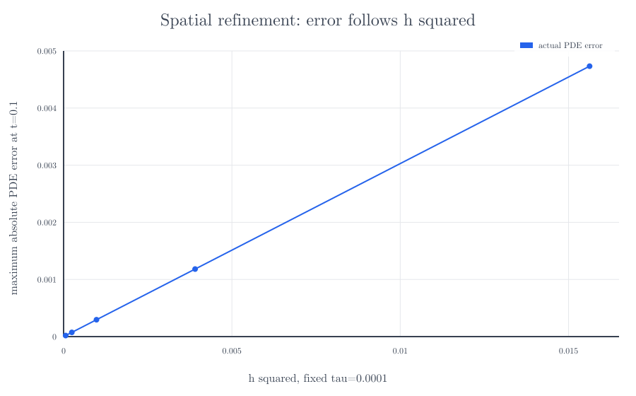
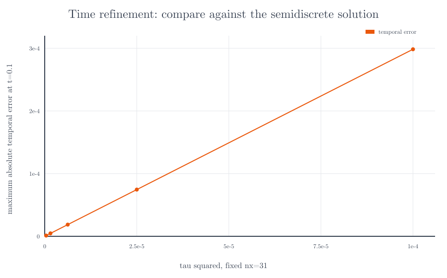

Crank–Nicolson: Heat Diffusion, Actual Solves and Oscillating Stable Modes
Abstract
Crank–Nicolson averages the spatial heat operator at consecutive time levels. For constant nonnegative diffusivity and homogeneous Dirichlet boundaries, its central-difference sine modes have amplification magnitude at most one for every positive time step. This norm stability permits large steps, yet large steps can reverse signs and damp stiff modes poorly. We begin with a single interior point whose first two values are −0.6 and 0.36, expose the actual native right-hand sides and reusable Thomas factors, then retain the original sixty-point sine experiment. Independent modal references separate spatial discretization error, time integration error and solve rounding. Separate refinement studies demonstrate second-order behavior without confusing a small residual or one fortunate error cancellation with PDE accuracy.
A heat problem small enough to solve by hand
Consider u_t=D u_xx on 0<x<L, with u(0,t)=u(L,t)=0. Use nx interior points, h=L/(nx+1), and time step τ. Put r=Dτ/(2h²). Averaging the old and new central differences gives
With one interior point, L=D=1 and τ=1, h=1/2 and r=2. Both neighbors are fixed zero, so 5u(n+1)=−3un. Starting from u0=1 gives u1=−0.6 and u^2=0.36. The magnitude decays while the sign alternates. The physical nonnegative heat solution cannot do this, so numerical stability alone has already failed to guarantee positivity or an accurate transient.
#include <dm/dm.hpp>
int main() {
std::filesystem::create_directories("build");
const auto t=dm::algorithms::crank_nicolson_heat_trace([](double){return 1.;},1,1,1,1,4);
if(std::abs(t.states[1].profile[1]+.6)>1e-15 || std::abs(t.states[2].profile[1]-.36)>1e-15 || t.factorizations!=1 || t.solves!=4) return 1;
std::print("| level | actual interior value | actual RHS before elimination | interior RMS | scaled solve residual |\n| ---: | ---: | :--- | ---: | ---: |\n");
for(const auto& s:t.states) std::print("| {} | {:.6f} | {} | {:.6f} | {:.2e} |\n",s.index,s.profile[1],s.rhs,s.rms,s.scaled_residual);
std::print("\nActual pivot {}; factorizations {}; complete solves {}.\n",t.pivots,t.factorizations,t.solves);
dm::graphics::Diagram d(65,1050);
dm::graphics::DiagramNodeStyle box;box.width=2;box.height=1.05;box.font_size=19;
d.text({3,2.1},"One unknown, two exact zero boundaries: r=2",23);
for(std::size_t level=0;level<3;++level) {
for(std::size_t i=0;i<3;++i) {
box.fill=i==1?dm::graphics::RGB{219,234,254}:dm::graphics::RGB{243,244,246};
d.node(std::format("u{}_{}",level,i),{3.*i,-2.*level},std::format("x={:.1f}\nu={:.2f}",t.coordinates[i],t.states[level].profile[i]),box);
}
if(level) d.edge(std::format("u{}_1",level-1),std::format("u{}_1",level));
}
d.text({3,-5.5},"Actual update: RHS = -3 u_old; divide by pivot 5",20)
.save_svg("build/crank_nicolson_one_point.svg");
const auto killed=dm::algorithms::crank_nicolson_heat_trace([](double){return 1.;},1,1,1,.25,1);
if(killed.states[1].profile[1]!=0) return 1;
std::print("At tau=0.25, r=0.5 and the same one-point mode becomes exactly zero in one step.\n");
}| level | actual interior value | actual RHS before elimination | interior RMS | scaled solve residual |
|---|---|---|---|---|
| 0 | 1.000000 | [] | 1.000000 | 0.00e+00 |
| 1 | -0.600000 | [-3] | 0.600000 | 1.85e-17 |
| 2 | 0.360000 | [1.7999999999999998] | 0.360000 | 3.08e-17 |
| 3 | -0.216000 | [-1.08] | 0.216000 | 2.57e-17 |
| 4 | 0.129600 | [0.6480000000000001] | 0.129600 | 2.14e-17 |
Actual pivot [5]; factorizations 1; complete solves 4. At tau=0.25, r=0.5 and the same one-point mode becomes exactly zero in one step.

At τ=1/4, r=1/2 instead: the old-time center coefficient is zero, so this mode is annihilated in one step. Neither result equals the exact continuous heat decay. A finite-step stability statement is a different claim from accuracy.
Why the solve works, and what it costs
For nx>1, the new-time matrix A has diagonal 1+2r and off-diagonals −r. With D,τ≥0, it is symmetric positive definite and strictly diagonally dominant. Thomas elimination has positive pivots in exact arithmetic:
The matrix is constant throughout a call, so datamunge factors it once, forms the old-time RHS at each step, then applies forward elimination and backward substitution. This costs O(nx) factorization work and O(nx) per step. Final-only storage is O(nx). A complete trace retains the initial profile, every actual RHS and every subsequent profile, using O(nx(nsteps+1)) storage. It records executed states directly; it does not rerun prefixes of the simulation.
The trace's scaled residual is a componentwise linear-solve backward error, max_i (Au−b)_i/(b_i+(A||u)_i), with zero/zero set to zero. A small value supports the solve of the discrete system, not the accuracy of that system as an approximation to the continuous PDE.
A modal stability argument, with the missing qualification
The discrete sine vector v_i=sin(mπi/(nx+1)), 1≤m≤nx, is an eigenvector of the central-difference heat operator, with
Since λ≤0, |g|≤1 for every τ≥0. The orthogonal sine basis therefore makes the ideal update nonexpansive in Euclidean norm, hence also in the uniform-grid discrete L2 norm. This is the unconditional stability statement for this linear homogeneous problem. It is not an unrestricted claim about other PDEs, nonlinear solvers, the maximum norm or finite floating arithmetic.
Write z=−τλ/2≥0. Then g=(1−z)/(1+z). When z>1 the mode flips sign, and g→−1 as z→∞. Crank–Nicolson is A-stable but not L-stable: extremely stiff modes are barely damped per step. By contrast, exact modal decay exp(τλ) tends to zero. The one-point control has λ_h=−8 and z=4, so g=−3/5, exactly the factor observed above.
Retaining the original sine experiment
Take L=D=1, nx=60, τ=0.001, u0(x)=sin(πx), and inspect times 0,0.05,0.10. The continuous solution is exp(−π²t)sin(πx). One trace to step 100 supplies all three profiles. Coordinates, measured norms and actual RHS values are native results, while heat_sine_mode() supplies independent spectral controls.
The original program read output index 30 but compared against the formula at index 31. Those points are symmetric for this sine and nearly equal, but the comparison should still name one coordinate consistently. Here the sample and all its references use index 30, at x=30/61; the grid has no point at x=1/2.
#include <dm/dm.hpp>
int main() {
std::filesystem::create_directories("build");
const double pi=std::acos(-1.);
const auto t=dm::algorithms::crank_nicolson_heat_trace([=](double x){return std::sin(pi*x);},1,1,60,.001,100);
auto plot=dm::graphics::RPlot::create();
const std::vector<dm::graphics::RGB> colors{{16,185,129},{37,99,235},{124,58,237}};
std::print("| t | numerical u[30] | continuous u[30] | max PDE error | max ideal-CN error | scaled solve residual |\n| ---: | ---: | ---: | ---: | ---: | ---: |\n");
std::size_t color=0;
for(const int step:{0,50,100}) {
const auto& state=t.states[step];
const auto m=dm::algorithms::heat_sine_mode(1,1,60,1,.001,step);
const auto pde=dm::algorithms::heat_profile_error(state.profile,m.continuous);
const auto modal=dm::algorithms::heat_profile_error(state.profile,m.discrete);
if(pde>8e-5 || modal>2e-14) return 1;
std::print("| {:.2f} | {:.8f} | {:.8f} | {:.6e} | {:.3e} | {:.3e} |\n",state.time,state.profile[30],m.continuous[30],pde,modal,state.scaled_residual);
plot.line(t.coordinates,state.profile,std::format("t={:.2f}",state.time),colors[color++],2);
}
plot.legend({"t=0.00","t=0.05","t=0.10"},colors)
.title("Original 60-point sine experiment: actual heat profiles")
.x_label("x").y_label("u(x,t)").x_limits(0,1).y_limits(0,1.05).size(900,560)
.save_svg("build/crank_nicolson.svg");
std::print("\nSample coordinate x[30]={:.9f}; one factorization, {} actual solves and {} RHS entries.\n",t.coordinates[30],t.solves,t.rhs_entries);
}| t | numerical u[30] | continuous u[30] | max PDE error | max ideal-CN error | scaled solve residual |
|---|---|---|---|---|---|
| 0.00 | 0.99966847 | 0.99966847 | 4.440892e-16 | 4.441e-16 | 0.000e+00 |
| 0.05 | 0.61035975 | 0.61029563 | 6.412286e-05 | 1.477e-14 | 1.292e-16 |
| 0.10 | 0.37266257 | 0.37258427 | 7.829788e-05 | 1.793e-14 | 7.530e-17 |
Sample coordinate x[30]=0.491803279; one factorization, 100 actual solves and 6000 RHS entries.

Here τ/h²=3.721, whereas forward Euler's one-dimensional diffusion bound is Dτ/h²≤1/2. The step is beyond that bound, yet the first sine mode has positive amplification because its eigenvalue is small compared with the highest grid mode. This smooth first-mode experiment cannot establish that all profiles avoid oscillations.
Separate spatial and temporal errors
For one sine mode, three closed-form amplitudes are available: the continuous PDE amplitude exp(−D(mπ/L)²t), the exact spatially discretized amplitude exp(λ_h t), and the ideal CN amplitude g^nsteps. Their differences separate spatial discretization, time integration and solve rounding.
Expanding the central sine gives λ_h=−D(mπ/L)²+O(h²) for fixed m. Expanding log(g) for sufficiently small τ gives log(g)=τλ_h+τ³λ_h³/12+O(τ⁵). Over fixed final time, the global temporal error is O(τ²). Thus, with smooth compatible data and fixed final time, the combined error is O(h²+τ²), before rounding dominates. The unnormalized one-step solution defect is O(τ³+τh²); a residual divided by τ is O(τ²+h²). Calling every version of this quantity a second-order local error would hide a power of τ.
First refine h while holding τ=0.0001 and final time 0.1. The independent semidiscrete error isolates space; the actual solver should approach it until the fixed temporal error matters. Plotting error against h² exposes the quadratic spatial law without hiding the comparison baseline.
#include <dm/dm.hpp>
int main() {
std::filesystem::create_directories("build");
std::vector<double> squared_spacing,errors;
std::print("| interior nx | h | actual total PDE error | pure spatial modal error | previous/current spatial error |\n| ---: | ---: | ---: | ---: | ---: |\n");
double previous=0;
for(const int nx:{7,15,31,63,127}) {
const auto m=dm::algorithms::heat_sine_mode(1,1,nx,1,.0001,1000);
const auto u=dm::algorithms::crank_nicolson_heat([](double x){return std::sin(std::acos(-1.)*x);},1,1,nx,.0001,1000);
const auto actual=dm::algorithms::heat_profile_error(u,m.continuous);
const auto space=dm::algorithms::heat_profile_error(m.semidiscrete,m.continuous);
const auto ratio=previous?previous/space:0.;
if(previous && (ratio<3.9 || ratio>4.1)) return 1;
std::print("| {} | {:.6f} | {:.6e} | {:.6e} | {:.6f} |\n",nx,m.grid.dx,actual,space,ratio);
squared_spacing.push_back(m.grid.dx*m.grid.dx);errors.push_back(actual);previous=space;
}
auto plot=dm::graphics::RPlot::create();
plot.line(squared_spacing,errors,"actual PDE error",{37,99,235},2)
.points(squared_spacing,errors,"",{37,99,235},4)
.title("Spatial refinement: error follows h squared")
.x_label("h squared, fixed tau=0.0001").y_label("maximum absolute PDE error at t=0.1")
.x_limits(0,.0165).y_limits(0,.005).size(900,560)
.save_svg("build/crank_nicolson_space.svg");
}| interior nx | h | actual total PDE error | pure spatial modal error | previous/current spatial error |
|---|---|---|---|---|
| 7 | 0.125000 | 4.732766e-03 | 4.732795e-03 | 0.000000 |
| 15 | 0.062500 | 1.182131e-03 | 1.182161e-03 | 4.003512 |
| 31 | 0.031250 | 2.954443e-04 | 2.954741e-04 | 4.000895 |
| 63 | 0.015625 | 7.383452e-05 | 7.386437e-05 | 4.000225 |
| 127 | 0.007812 | 1.843597e-05 | 1.846583e-05 | 4.000056 |

For time refinement, fix nx=31 and compare the actual solution with the exact semidiscrete reference. Comparing only to the continuous PDE would eventually reach a spatial floor, and the two signed error contributions can also cancel. The next table reports both errors rather than inferring temporal order from their sum.
#include <dm/dm.hpp>
int main() {
std::filesystem::create_directories("build");
std::vector<double> squared_step,errors;
std::print("| steps | tau | actual error against semidiscrete | previous/current temporal error | actual error against continuous PDE |\n| ---: | ---: | ---: | ---: | ---: |\n");
double previous=0;
for(const int steps:{10,20,40,80,160}) {
const double dt=.1/steps;
const auto m=dm::algorithms::heat_sine_mode(1,1,31,1,dt,steps);
const auto u=dm::algorithms::crank_nicolson_heat([](double x){return std::sin(std::acos(-1.)*x);},1,1,31,dt,steps);
const auto time=dm::algorithms::heat_profile_error(u,m.semidiscrete);
const auto pde=dm::algorithms::heat_profile_error(u,m.continuous);
const auto ratio=previous?previous/time:0.;
if(previous && (ratio<3.98 || ratio>4.02)) return 1;
std::print("| {} | {:.7f} | {:.6e} | {:.6f} | {:.6e} |\n",steps,dt,time,ratio,pde);
squared_step.push_back(dt*dt);errors.push_back(time);previous=time;
}
auto plot=dm::graphics::RPlot::create();
plot.line(squared_step,errors,"temporal error",{234,88,12},2)
.points(squared_step,errors,"",{234,88,12},4)
.title("Time refinement: compare against the semidiscrete solution")
.x_label("tau squared, fixed nx=31").y_label("maximum absolute temporal error at t=0.1")
.x_ticks({0,.000025,.00005,.000075,.0001},{"0","2.5e-5","5e-5","7.5e-5","1e-4"})
.y_ticks({0,.0001,.0002,.0003},{"0","1e-4","2e-4","3e-4"})
.x_limits(0,.000106).y_limits(0,.00032).size(900,560)
.save_svg("build/crank_nicolson_time.svg");
bool capped=false,invalid=false;
int callbacks=0;
try { (void)dm::algorithms::crank_nicolson_heat_trace([&](double){++callbacks;return 1.;},1,1,1,1,2,10); }
catch(const std::length_error&) { capped=true; }
try { (void)dm::algorithms::crank_nicolson_heat([](double){return 1.;},1,-1,1,.1,1); }
catch(const std::invalid_argument&) { invalid=true; }
if(!capped || !invalid || callbacks) return 1;
std::print("\nComplete trace cap rejects before sampling; negative diffusivity rejects: pass.\n");
}| steps | tau | actual error against semidiscrete | previous/current temporal error | actual error against continuous PDE |
|---|---|---|---|---|
| 10 | 0.0100000 | 2.984314e-04 | 0.000000 | 2.957330e-06 |
| 20 | 0.0050000 | 7.454854e-05 | 4.003182 | 2.209255e-04 |
| 40 | 0.0025000 | 1.863343e-05 | 4.000795 | 2.768406e-04 |
| 80 | 0.0012500 | 4.658127e-06 | 4.000199 | 2.908159e-04 |
| 160 | 0.0006250 | 1.164517e-06 | 4.000050 | 2.943096e-04 |
Complete trace cap rejects before sampling; negative diffusivity rejects: pass.

Numeric and resource contracts
The original final-profile signature remains available through pde_solvers.hpp and the umbrella dm/dm.hpp. Its implementation and the trace use one canonical kernel. Callbacks are sampled once at each ascending interior coordinate and never at the two endpoints, which are forced to exact zero. nx must be positive, nsteps nonnegative, L positive, and D and τ nonnegative; all scalar inputs and sampled profile values must be finite. D=0 or τ=0 gives identity steps. Zero steps still validates the grid and returns its initial sampled profile. Callback exceptions propagate. Invalid dimensions that previously risked empty Thomas solves or huge allocations now fail explicitly.
Positive spacing and ratio must remain representable, rounded coordinates must stay strictly inside the domain, and coefficients and final time must fit finite double storage. Nonfinite stencil/elimination arithmetic raises std::overflow_error, even though ideal real-arithmetic stability holds. The widened coefficient calculation and factor reuse can change last-bit rounding relative to the former implementation; no bitwise identity is promised.
The trace's default cap is 1,000,000 stored profile/RHS scalars. Its exact count is (nx+2)(nsteps+1)+nx*nsteps; coordinates, factors and metadata are additional storage. Scalar and derived-coefficient checks precede the complete budget check, which precedes allocation and callback sampling. An over-budget call returns no partial trace. A zero cap disables only that cap, and allocation can still fail. Final-only calls retain O(nx) memory and have no history cap.
No external dataset is needed for these manufactured heat controls. Native tests additionally compare 500 random small evolutions against an independent dense long-double Cholesky solver, check actual RHS/factor/step records and norm contraction, and exercise every sine mode on several grids. They cover both refinement orders, original profiles, zero-step/zero-diffusion/zero-time cases, callback order and exceptions, exact and one-below history caps, invalid and unrepresentable arithmetic, owned storage and profile-error validation. The focused suite also runs under address and undefined-behavior sanitizers.
Sources
J. Crank and P. Nicolson (1947), [A practical method for numerical evaluation of solutions of partial differential equations of the heat-conduction type](https://doi.org/10.1017/S0305004100023197), Proceedings of the Cambridge Philosophical Society 43(1), 50–67, introduced the method. The derivations above specialize to this constant-coefficient linear homogeneous problem. I. Higueras and T. Roldán (2023), [A new insight on positivity and contractivity of the Crank–Nicolson scheme for the heat equation](https://arxiv.org/abs/2301.01066), study the separate positivity and maximum-norm questions; this report uses the explicit one-point counterexample and sine-basis L2 argument rather than claiming those stronger properties from unconditional stability.